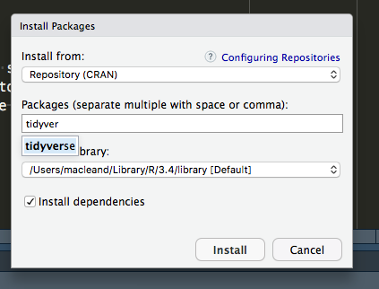

Prerequisites
No specific knowledge is assumed for this book, though you will need to install some software.
- R
- RStudio
- The
tidyversepackages
You’ll also need the following files diamonds.csv and datasets.xlsx
Installing R
Follow this link and install the right version for your operating system https://www.stats.bris.ac.uk/R/
Installing RStudio
Follow this link and install the right version for your operating system https://www.rstudio.com/products/rstudio/download/
Installing R packages in RStudio
To install all the tidyverse packages in one go start RStudio and use the Packages tab in the lower-right panel. Click the install button (top left of the panel) and enter ‘tidyverse’, then click install as in this picture
To complete the quizzes you’ll need a package called nycflights13. Install that in the same way.